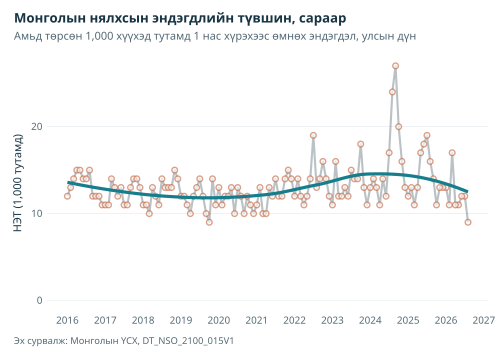
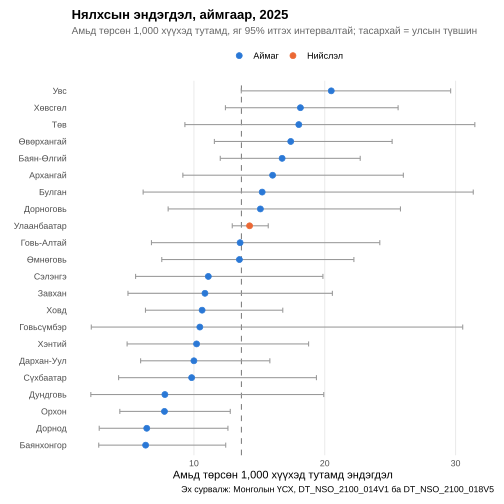
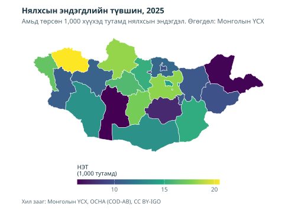

Суулгах
mongolstats, mongolmaps-ийн нийтлэгдсэн хувилбарыг CRAN-аас суулгана:
install.packages(c("mongolstats", "mongolmaps"))Анхны шинжилгээ: нялхсын эндэгдэл
Энэ жишээнд хүн амын эрүүл мэнд, эрүүл мэндийн тогтолцооны гүйцэтгэлийн гол үзүүлэлт болох нялхсын эндэгдлийн түвшнийг (НЭТ) ашиглана. Хүснэгт олох, бүтцийг шалгах, өгөгдөл татах, түвшин тооцох, зураглах бүтэн ажлын урсгалыг үзүүлнэ.
Алхам 1: багцуудыг ачаалах
library(mongolstats)
library(mongolmaps)
library(dplyr)
library(ggplot2)
# Жишээний гаралтын нэрийг англиар тохируулах
# Шалгасан сургалтын туслах функцүүд багцад дагалдах бөгөөд кодыг нь үзэж болно.
source(system.file("examples", "analysis-helpers.R", package = "mongolstats"), local = TRUE)
source(system.file("examples", "plot-style.R", package = "mongolstats"), local = TRUE)Алхам 2: зөв хүснэгт олох
Каталогоос түлхүүр үгээр хайна:
mortality_tables <- nso_search("infant mortality")
mortality_tables |>
distinct(tbl_id, tbl_eng_nm)
#> # A tibble: 8 × 2
#> tbl_id tbl_eng_nm
#> <chr> <chr>
#> 1 DT_NSO_2100_014V1 NUMBER OF INFANT MORTALITY, aimags and the Capital and by m…
#> 2 DT_NSO_2100_014V2 NUMBER OF INFANT MORTALITY, by soum and discrict, and by ye…
#> 3 DT_NSO_2100_014V4 INFANT MORTALITY, by sex, by soum, and by year
#> 4 DT_NSO_2100_014V5 INFANT MORTALITY RATE, per 1000 live births, by sex, by sou…
#> 5 DT_NSO_2100_015V1 INFANT MORTALITY RATE, per 1000 live births, aimags and the…
#> 6 DT_NSO_2100_015V2 INFANT MORTALITY, per 1000 live births, by soum, and by year
#> 7 DT_NSO_2100_015V2 INFANT MORTALITY, per 1000 live births, by year
#> 8 DT_NSO_2800_019V1 INFANT MORTALITY RATE PER 1000 LIVE BIRTHSҮСХ түвшин (амьд төрсөн 1,000 хүүхэд тутамд) болон суурь тоо (нялхсын эндэгдэл)-г хоёуланг нь нийтэлдэг. Эхлээд сарын түвшний DT_NSO_2100_015V1 хүснэгтийг авч, дараа нь тоог ашиглан аймгуудыг харьцуулна.
Алхам 3: хүснэгтийн мета өгөгдлийг судлах
Өгөгдөл татахаасаа өмнө хүснэгт ямар хэмжээсүүдтэйг шалгана:
# Хүснэгтийн бүтцийг харах
meta <- nso_table_meta("DT_NSO_2100_015V1")
meta
#> # A tibble: 2 × 5
#> dim code is_time n_values codes
#> <chr> <chr> <lgl> <int> <list>
#> 1 Region Бүс FALSE 28 <tibble [28 × 3]>
#> 2 Month Сар TRUE 128 <tibble [128 × 3]>
# Хамгийн эрт үеэс нь огноотой нь жагсаана. Сарын нэр "YYYY-MM";
# код нь хамгийн сүүлийн сараас ("0") ухарч тоолдог тул үеийг нэрээр сонгоно.
months <- nso_table_periods("DT_NSO_2100_015V1")
head(months)
#> # A tibble: 6 × 4
#> code label date frequency
#> <chr> <chr> <date> <chr>
#> 1 13 2016-01 2016-01-01 month
#> 2 14 2016-02 2016-02-01 month
#> 3 15 2016-03 2016-03-01 month
#> 4 16 2016-04 2016-04-01 month
#> 5 17 2016-05 2016-05-01 month
#> 6 18 2016-06 2016-06-01 month
range(months$label)
#> [1] "2016-01" "2026-08"Алхам 4: өгөгдөл татах
ҮСХ-ны нийтэлсэн сар бүрийн улсын түвшнийг авна:
imr_national <- nso_data(
tbl_id = "DT_NSO_2100_015V1",
selections = list(
Region = "0", # улсын нийт дүн
Month = months$label
),
labels = "en" # Англи нэрийн баганууд нэмэх
)
# Month багана нь утга нь өөрчлөгдөхгүй "2024-03" зэрэг нэрийг агуулна
# ҮСХ шинэ сар нийтлэхэд ч гэсэн
imr_national |>
arrange(Month) |>
head(10)
#> # A tibble: 10 × 5
#> Region Month value Region_en Month_en
#> <chr> <chr> <dbl> <chr> <chr>
#> 1 0 2016-01 12 Total 2016-01
#> 2 0 2016-02 13 Total 2016-02
#> 3 0 2016-03 14 Total 2016-03
#> 4 0 2016-04 15 Total 2016-04
#> 5 0 2016-05 15 Total 2016-05
#> 6 0 2016-06 14 Total 2016-06
#> 7 0 2016-07 14 Total 2016-07
#> 8 0 2016-08 15 Total 2016-08
#> 9 0 2016-09 12 Total 2016-09
#> 10 0 2016-10 12 Total 2016-10ҮСХ сарын эдгээр түвшнийг бүхэл тоонд тоймлодог. Энэ нь 1,000 тутамд ойролцоогоор 10–20 байдаг хэмжүүрийн хувьд бүдүүн нарийвчлал юм.
Алхам 5: өөрчлөлтийг дүрслэх
imr_national |>
mutate(date = nso_period_date(Month)) |> # "YYYY-MM"-ийг огноо болгох
ggplot(aes(x = date, y = value)) +
geom_line(color = "#183442", linewidth = 1, alpha = 0.3) + # Өөрчлөлт ялгарч харагдахаар түүхий өгөгдлийг бүдэгрүүлэх
geom_point(color = "#C2623D", size = 2, shape = 21, fill = "white", stroke = 1, alpha = 0.6) +
# Зөвхөн дүрслэх тэгшитгэл; загварт суурилсан тодорхойгүй байдлын зурвасгүй
geom_smooth(
method = "loess", formula = y ~ x, se = FALSE,
color = "#167D8D", fill = "#167D8D", alpha = 0.2, linewidth = 1.5
) +
scale_x_date(date_breaks = "1 year", date_labels = "%Y") +
scale_y_continuous(limits = c(0, NA)) +
labs(
title = "Infant Mortality Rate in Mongolia (Monthly)",
subtitle = "Deaths under age 1 per 1,000 live births, national",
x = NULL,
y = "IMR (per 1,000)",
caption = "Source: NSO Mongolia, DT_NSO_2100_015V1"
) +
theme(
panel.grid.minor = element_blank(),
panel.grid.major.x = element_blank() # Босоо торон шугам цагийн цувааг хэт дүүргэдэг
)
Тэгшитгэл нь тоймлосон сарын түвшний хайгуулын хураангуй юм. Төрөлтийн ялгаатай тоо, хөрш саруудын хамаарлыг тооцохгүй.
Бүс нутгийн харьцуулалт
Аймгуудыг жилээр харьцуулахдаа сарын 12 түвшний дунджийг авч болохгүй. Сарын түвшний энгийн дундаж төрөлт цөөн сард олон төрөлттэй сартай ижил жин өгнө. ҮСХ-ны тоймлолт жижиг аймгийн сарын түвшнийг утга хооронд огцом үсрүүлдэг. Оронд нь жилийн нялхсын эндэгдэл, амьд төрөлтийг тус тус нэмж, дараа нь хуваана:
Ижил хугацааны хүн амын ердийн хөдөлгөөнөөс тооцдог энэхүү уламжлалт нялхсын эндэгдлийн түвшин нь холбон тогтоосон төрсөн үеийн бүлгийн магадлал биш. Нялхсын эндэгдэлд өмнөх онд төрсөн хүүхэд орж болно. Тоо нь нялхсын эндэгдэл (DT_NSO_2100_014V1), амьд төрөлт (DT_NSO_2100_018V5) гэсэн сарын хоёр хүснэгтээс ирнэ.
# Хүлээгдэж буй тусдаа нэгжүүд: улсын дүн, 21 аймаг, нийслэлийн 5 код.
aimag_codes <- setdiff(mn_aimags()$nso_code, "511")
units <- c("0", aimag_codes, "5")
death_source <- analysis_fetch_counts("DT_NSO_2100_014V1", units)
birth_source <- analysis_fetch_counts("DT_NSO_2100_018V5", units)
# Хүлээгдэж буй бүх нэгжид хоёр хүснэгт хоёулаа тухайн оны бүх сартай байх ёстой.
# Тайлагдаагүй ажиглалтыг дутуу хэвээр хадгалж, тэг гэж үзэхгүй.
latest_year <- analysis_latest(analysis_common_years(death_source$annual, birth_source$annual))
infant_deaths <- filter(death_source$annual, year == latest_year)
live_births <- filter(birth_source$annual, year == latest_year)
imr_regional <- analysis_pair(
select(infant_deaths, Region, Region_en, deaths = count, missing_deaths = n_missing),
select(live_births, Region, births = count, missing_births = n_missing),
by = "Region"
) |>
mutate(
Region_en = trimws(Region_en),
level = case_when(Region == "0" ~ "National", Region == "5" ~ "Capital", .default = "Aimag")
)
imr_regional <- bind_cols(imr_regional, analysis_poisson(imr_regional$deaths, imr_regional$births)) |>
rename(imr = rate)
national_imr <- imr_regional$imr[imr_regional$Region == "0"]
stopifnot(length(national_imr) == 1L, is.finite(national_imr))
imr_units <- filter(imr_regional, Region != "0")
stopifnot(nrow(imr_units) == 22L)
imr_units |>
transmute(
area = Region_en, deaths, births, imr,
interval = if_else(is.finite(imr), sprintf("%.1f to %.1f", lower, upper), "Insufficient data")
) |>
knitr::kable(
col.names = c("Area", "Infant deaths", "Live births", "IMR per 1,000", "95% CI"),
digits = c(0, 0, 0, 1, 0), format.args = list(big.mark = ",")
)| Нутаг дэвсгэр | Нялхсын эндэгдэл | Амьд төрөлт | Нялхсын эндэгдэл (1,000 амьд төрөлтөд) | 95% итгэх интервал |
|---|---|---|---|---|
| Дорнод | 8 | 1,251 | 6.4 | 2.8–12.6 |
| Сүхбаатар | 8 | 814 | 9.8 | 4.2–19.4 |
| Хэнтий | 10 | 980 | 10.2 | 4.9–18.8 |
| Төв | 12 | 666 | 18.0 | 9.3–31.5 |
| Говьсүмбэр | 3 | 287 | 10.5 | 2.2–30.5 |
| Сэлэнгэ | 11 | 991 | 11.1 | 5.5–19.9 |
| Дорноговь | 13 | 862 | 15.1 | 8.0–25.8 |
| Дархан-Уул | 18 | 1,800 | 10.0 | 5.9–15.8 |
| Өмнөговь | 15 | 1,113 | 13.5 | 7.5–22.2 |
| Дундговь | 4 | 514 | 7.8 | 2.1–19.9 |
| Орхон | 15 | 1,936 | 7.7 | 4.3–12.8 |
| Өвөрхангай | 28 | 1,609 | 17.4 | 11.6–25.2 |
| Булган | 7 | 460 | 15.2 | 6.1–31.4 |
| Баянхонгор | 8 | 1,268 | 6.3 | 2.7–12.4 |
| Архангай | 16 | 999 | 16.0 | 9.2–26.0 |
| Хөвсгөл | 32 | 1,764 | 18.1 | 12.4–25.6 |
| Завхан | 9 | 830 | 10.8 | 5.0–20.6 |
| Говь-Алтай | 11 | 813 | 13.5 | 6.8–24.2 |
| Баян-Өлгий | 41 | 2,449 | 16.7 | 12.0–22.7 |
| Ховд | 18 | 1,694 | 10.6 | 6.3–16.8 |
| Увс | 28 | 1,366 | 20.5 | 13.6–29.6 |
| Улаанбаатар | 423 | 29,671 | 14.3 | 12.9–15.7 |
2025 онд улсын бүртгэгдсэн нялхсын эндэгдлийн түвшин амьд төрсөн 1,000 хүүхэд тутамд 13.6 байв. 0 газар нутгийн жилийн үнэлгээнд ажиглалт хангалтгүй. Эх объектууд түүхий ажиглалт, тэмдэглэгээ, гарал үүслийг шалгахад зориулж хадгална.
Бүс нутгийн ялгааг дүрслэх
imr_units |>
filter(is.finite(imr)) |>
mutate(Region_en = forcats::fct_reorder(Region_en, imr)) |> # Цагаан толгойгоор бус, түвшнээр эрэмбэлэх
ggplot(aes(x = imr, y = Region_en)) +
geom_vline(xintercept = national_imr, linetype = "dashed", color = "grey50") +
geom_errorbar(aes(xmin = lower, xmax = upper), width = 0.3, color = "grey60", orientation = "y") +
geom_point(aes(color = level), size = 2.5) +
scale_color_manual(values = c(Aimag = "#167D8D", Capital = "#C2623D"), name = NULL) +
labs(
title = paste0("Infant Mortality by Aimag, ", latest_year),
subtitle = "Per 1,000 live births, with exact 95% CIs; dashed line = national rate",
x = "Deaths per 1,000 live births",
y = NULL,
caption = "Source: NSO Mongolia, DT_NSO_2100_014V1 and DT_NSO_2100_018V5"
) +
theme(
panel.grid.major.y = element_blank(),
panel.grid.minor = element_blank(),
legend.position = "top"
)
Интервал нь бүртгэсэн тоо, төрөлтийн хуваарийг тогтсон гэж үзсэн Пуассоны тооллогын хэлбэлзлийг дүрсэлнэ. Дутуу бүртгэл, засвар, газар нутгийн зөрүүг хамрахгүй. Тооцсон улсын шугамыг давах нь дүрслэх харьцуулалт бөгөөд бие даасан хоёр түүврийн тест биш: улсын нийт дүнд аймаг бүр ордог. Төрөлт, нас баралтыг оршин суугаа газраар бус, болсон газраар хуваарилбал шилжүүлэн эмчлэх хэв шинж газар нутгийн харьцуулалтыг гажуудуулж болно. Ялгааг тайлбарлахаасаа өмнө эдгээр эх хүснэгтийн тодорхойлолтыг баталгаажуулна.
Газар зүйн мэдээлэл нэмэх
mongolmaps нь ҮСХ-ны кодтой хил зааг өгдөг тул Region баганаар нэр тааруулахгүй холбож болно.
# mn_join() takes Ulaanbaatar's figures from region code "5" when the
# Энэ хүснэгтэд ч мөн адил нийслэлийн өөрийн "511" код хоосон байна
imr_map <- imr_units |>
mn_join(by = "Region", level = "aimag")
stopifnot(nrow(imr_map) == 22L, !anyDuplicated(imr_map$nso_code))
mn_map(
imr_map,
fill = imr,
title = paste0("Infant Mortality Rate, ", latest_year)
) +
labs(subtitle = "Infant deaths per 1,000 live births. Data: NSO Mongolia", fill = "IMR\n(per 1,000)") +
guides(fill = guide_colourbar(barwidth = grid::unit(85, "mm"), barheight = grid::unit(3, "mm"))) +
analysis_map_theme()
Саарал газарт өгөгдөл хангалтгүй. Зураг зөвхөн цэгэн үнэлгээ харуулна. Дээрх итгэх интервалтай хамт уншина: жижиг аймагт нялхсын эндэгдэл хэдхэнээр өөрчлөгдөхөд өнгө ихээхэн солигдож болно.
Гол функцүүдийн хураангуй
| Функц | Зорилго | Жишээ |
|---|---|---|
nso_search() |
Хүснэгтийг түлхүүр үгээр хайх | nso_search("mortality") |
nso_table_meta() |
Хүснэгтийн хэмжээсүүдийг авах | nso_table_meta("DT_NSO_...") |
nso_dim_values() |
Хэмжээсийн утгуудыг жагсаах | nso_dim_values(tbl, "Region") |
nso_table_periods() |
Хугацааны хамралтыг шалгах | nso_table_periods(tbl) |
nso_latest_periods() |
Сонголтод хэрэглэх хамгийн сүүлийн үеүүд | list(Year = nso_latest_periods(tbl, n = 5)) |
nso_data() |
Өгөгдөл татах | nso_data(tbl, selections, labels) |
nso_period_date() |
Хугацааны нэрийг огноо болгох | nso_period_date(data$Month) |
mongolmaps::mn_join() |
ҮСХ-ны өгөгдлийг хил заагтай кодоор холбох | mn_join(data, by = "Region", level = "aimag") |
mongolmaps::mn_map() |
Холбосон өгөгдлийг түргэн зураглах | mn_map(joined, fill = value) |
Зөвлөмжит дадал
-
Скриптэд код, дүрслэлд нэр хэрэглэх: сонголт код, нэрийн аль алиныг хүлээн авна. Гэхдээ газар нутгийн зэрэг код илүү тогтвортой.
labels = "en"кодын хажууд уншихад хялбар нэрийн багана нэмнэ. Хугацаа бол онцгой: ҮСХ хамгийн сүүлийн үеэс ("0") дугаарладаг тул mongolstats үргэлж нэрээр буцаана. Иймээс хугацааг нэрээр эсвэлnso_latest_periods()-аар сонгоно. -
Эхлээд мета өгөгдлийг шалгах: татахаасаа өмнө
nso_table_meta(),nso_dim_values()-өөр хэмжээс, кодыг харна. -
Түвшнүүдийг тусгаарлах: Region баганад улсын дүн (
"0"), бүсүүд ("1"–"4"), нийслэл ("5"), аймгууд холилддог. Нэмэх, эрэмбэлэхээс өмнө нэг түвшнээр шүүхгүй бол нас баралтыг давхар тоолно. - Түвшнийг тооноос байгуулах: хугацааны хүртвэр, хуваарийг тус тус нэмж, дараа нь хуваана. Сарын түвшнүүдийн дунджийг авч болохгүй.
- Тодорхойгүй байдлыг харуулах: цөөн хүн амын түвшин тогтворгүй. Итгэх интервал мэдээлэх эсвэл хэд хэдэн жилийг нэгтгэнэ.
-
Кодоор холбох: нэр тааруулахын оронд
Regionкодын баганадmongolmaps::mn_join()-г ашиглана.
Түгээмэл ажлын урсгал
Цагийн цувааны шинжилгээ
- Хүснэгт хайх → Хугацааг шалгах → Сар эсвэл оноор татах → Өөрчлөлтийг зураглах
Дараагийн алхам
- Нэмэлт өгөгдөл хайх: ахисан хайлтын аргыг өгөгдөл хайх заавраас үзнэ үү
- Газрын зураг бүтээх: орон зайн шинжилгээг зураглалын заавраас сурна
- Лавлах: бүх функцийг лавлахаас үзнэ үү
Түгээмэл эрүүл мэндийн хүснэгтийн товч лавлах
| Үзүүлэлт | Хүснэгтийн код | Хэмжүүр | Нарийвчлал |
|---|---|---|---|
| Нялхсын эндэгдлийн түвшин | DT_NSO_2100_015V1 | Амьд төрсөн 1,000 хүүхэд тутмын түвшин | Аймаг, сар |
| Нялхсын эндэгдэл | DT_NSO_2100_014V1 | Тоо | Аймаг, сар |
| Амьд төрөлт | DT_NSO_2100_018V5 | Тоо | Аймаг, сар |
| 5 хүртэлх насны хүүхдийн эндэгдлийн түвшин | DT_NSO_2100_030V2 | Амьд төрсөн 1,000 хүүхэд тутмын түвшин | Аймаг, сар |
| Эхийн эндэгдэл | DT_NSO_2100_002V2 | Тоо | Аймаг, сар |
| Нас баралт, голлох шалтгаанаар | DT_NSO_2100_027V1 | Тоо | Сум, он |
| Хорт хавдрын өвчлөл | DT_NSO_2100_012V1 | Хүн амын 10,000 тутмын түвшин | Хавдрын төрөл, он |
| Халдварт өвчний тохиолдол (сүрьеэг оролцуулсан) | DT_NSO_2100_035V1 | Тоо | Өвчин, сар |
| Халдварт өвчний тохиолдол | DT_NSO_2100_020V2 | Тоо | Өвчин, сум, он |
| Жилийн дундах хүн ам | DT_NSO_0300_002V1 | Тоо | Аймаг, он |